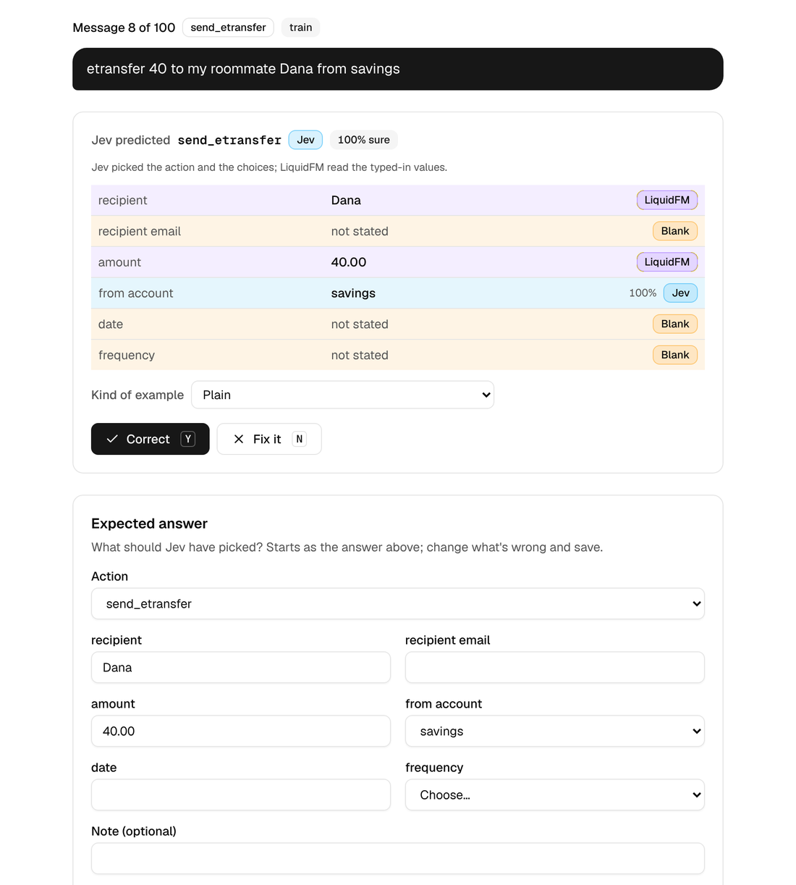

Talk to UI components in under 200ms
A chat UI that picks a prebuilt banking form and fills it in from what the customer types. Code on GitHub · Explore the results
Defaulting to Chatbots
It’s so easy, it should feel wrong. Offload the interaction to a simple chatbot box. Let users type questions and get text responses back from the AI. I think this is a trap for certain workflows. The user ends up without the normal guidance offered by traditional user interfaces and feels lost. For exploratory tasks where the entire point is creating or figuring out their workflow, or when the user doesn’t want to think through the task end-to-end, this is fine. But when the user knows what to do and the task is narrow, this chatbot design pattern is friction.
There is a proliferation of many apps that have chat as their main component. Some apps even drop building their own user interfaces and adopt native messaging apps, like Instinct. One of the topics I like to think about is the role of traditional user interfaces in the age of the chatbot.
Rethinking Interaction
This article explores an alternative: what if the right UI materialized in front of the user when they type (or speak) their intent? Linear does this through keyboard shortcuts. Making new user stories, assigning them to people, setting estimates, and putting stories into the right sprint is just a few keyboard taps.
Inspired by these ideas, this article takes this approach: for tasks that have well-known existing patterns of interaction, a chat interface that can surface the right UI to guide the user through their task, solves the issue of remembering and navigating a multi-screen, multi-dropdown user interface. Executed well, the experience can be fluid.
Principle 1: when selecting a design approach, think about how it makes the user feel. Can they efficiently get the right context and complete their task with minimal friction?
The Setup
Given where I work, banking is top of mind. This is how I think banking apps could look like: a chat UI that picks a prebuilt form and fills it in from what the client types.
Define the action space
Extract what you typically find in a banking app into intent-based actions. The last two columns denote which parts of the action form are filled out by which model. Jev is good at picking out the right option from a set of options, but can’t generate text so freeform entities can’t easily be picked out and filled out, unless you tokenize the input and apply Jev to each <token, form field> pair. This smells awkward and certain cases where an entity spans multiple tokens might break this. Meanwhile, billion and trillion parameter language models are perceptibly slow and expensive for single phrase data extraction. I had previously read about Liquid Foundation Models and how easy they are to tune for narrow domain specific tasks, like data extraction. They are very fast and well-suited for edge deployments. More on this later.
| Action | What it does | Free-text fields (small fine-tuned model) | Choice fields (Jev) |
|---|---|---|---|
add_etransfer_contact | Save a new e-Transfer recipient | name, email, phone | |
send_etransfer | Send an e-Transfer, now or scheduled | recipient*, recipient_email*, amount, date | from_account, frequency |
request_etransfer | Ask someone to send you money | from_person, from_email, amount | |
cancel_etransfer | Cancel an unaccepted e-Transfer | recipient*, amount | |
setup_autodeposit | Turn on Autodeposit | email, phone | deposit_account |
pay_credit_card | Pay a credit card | amount | payment_option, from_account |
pay_bill | Pay a biller, now or scheduled | payee*, amount, date | from_account, frequency |
add_payee | Add a biller | biller, account_number | |
transfer_between_accounts | Move money between your own accounts | amount, date | from_account, to_account, frequency |
open_account | Open a new account | initial_deposit | account_type, from_account |
manage_card | Lock, unlock or replace a card | card_action, card, reason | |
view_account | Show a balance or transactions | account, view | |
update_contact_info | Change phone, email or address | new_email, new_phone | contact_type |
Generate training data with a strong model
I used Opus 5.5 to generate 1,853 command phrases for this action space to mimic people using the app. This dataset let me run the simplest step of model post-training: using a closed-weight model’s outputs to run supervised fine tuning on a smaller open-weight student model. Supervised fine tuning is when a student model learns to mimic a larger model’s output, such as how it translates English into a constrained JSON object per action form. Example:
{
"messages": [
{"role": "system", "content": "Extract these fields from the user's banking message: recipient, recipient_email, amount, date. Only copy information. Never invent names, emails, phone numbers or dates."},
{"role": "user", "content": "transfer $300 to priya.k@example.com"},
{"role": "assistant", "content": "{\"recipient\":\"\",\"recipient_email\":\"priya.k@example.com\",\"amount\":300,\"date\":\"\"}"}
],
"meta": {
"id": "smp-006",
"action": "send_etransfer",
"vague": false,
"present": ["recipient_email", "amount"]
}
}The data was split into train, validation, and test sets. The baseline untrained Liquid FM 350m parameter model correctly filled out the JSON ~20% of the time. The main failure mode was hallucinating a value for a field when none was stated.
Here is one such example going through training. Drag the slider to watch the model's confidence in the right answer rise and the loss fall. The numbers are illustrative, not from a real run.
Vibe code an annotation app and label the data
Generating UIs is easy now and my use case is pretty simple. I just want to see the English command, the model output colour coded to which model generated the specific field, and the expected answers. So I got Claude to generate an annotation app for me over the 1,853 examples it just made. It closely matches the UI of the actual application, which makes this process reflective of what the user would experience.
I then spent 30 minutes going through 62 cases — just enough to identify key problems and decide what the answer should have been. This process is called “open-coding”, a technique from qualitative research methods. It involves writing short descriptive labels about the model outputs to let labels inductively emerge from the data. This effort also generated 62 golden answers. I let Claude categorize the notes into a set of labels (“axial-coding”) and then freely review and modify the rest of the dataset’s golden answers conditioned on my labelling feedback. In a real project, I would give axial-coding more review time.

Some examples of errors:
- Issues with spelled out dollar amounts (as would happen in future audio transcription), dates that don’t refer to the date on the form, names incorrectly pulled from emails (“abbey.jo@gmail.com”), names used for email field instead of name, incapable of handling edits (“$50, no wait make it $60”).
- Fabrication: the base LFM model filled 89% of fields that should have been blank. After the first LoRA run, that fell to 0.8% (val) and 1.6% (test), and correct matches rose from 23.5% to 95.9%.
- Train-serving skew: The model learned to write its answers in the same order as the fields on the form, but the serving tool forced an alphabetical order, so the model started inventing values for fields it hadn't yet read during generation. I fixed this by training on answers with randomly shuffled field order, a kind of data augmentation.
Results
The share of whole forms where every field is right. One wrong field fails the whole form.
| Model | Validation | Test |
|---|---|---|
| Untuned LFM2.5-350M | 20.8% | 24.2% |
| SFT LFM2.5-350M | 98.9% | 96.9% |
Per-field precision and recall
I also scored each form field on its own.
Precision: when the model fills a field in, how often is the value right?
Recall: when the user message states a value, how often does the model find it?
A wrong value counts against both, and fields that are correctly left blank are not counted.
| Model | Precision (val) | Recall (val) | Precision (test) | Recall (test) |
|---|---|---|---|---|
| Untuned LFM2.5-350M | 46.2% | 88.7% | 49.5% | 88.5% |
| SFT LFM2.5-350M | 99.4% | 99.2% | 98.7% | 98.0% |
The untuned model finds most values but fills in nearly everything, so only about half of what it writes is right. Tuning fixed that without losing recall. On the test set the fine-tuned model fabricated 2 values, missed 7 and got 6 wrong, across 642 stated values. The weakest fields were open_account.initial_deposit (83% precision) and dispute_transaction.date (83% recall, only 6 cases).
Explore the per-field and per-action results interactively.
Picking the action
Jev’s choice of action on the 459 test messages: 431 correct (93.9%). Most actions were found 93 to 100% of the time. The weak one is pay_bill (76% recall): 6 of its 42 messages went to send_etransfer and 4 to “none”.
For each action, recall is how many of its messages Jev sent to it, and precision is how many of the messages Jev sent to it really belonged there.
| Action | Test messages | Precision | Recall |
|---|---|---|---|
send_etransfer | 107 | 93.6% | 95.3% |
request_etransfer | 46 | 100% | 95.7% |
add_etransfer_contact | 44 | 100% | 95.5% |
pay_bill | 42 | 100% | 76.2% |
dispute_transaction | 36 | 100% | 97.2% |
transfer_between_accounts | 35 | 100% | 97.1% |
cancel_etransfer | 32 | 93.8% | 93.8% |
open_account | 29 | 100% | 100% |
pay_credit_card | 29 | 100% | 93.1% |
setup_autodeposit | 23 | 100% | 95.7% |
update_contact_info | 19 | 100% | 94.7% |
add_payee | 17 | 100% | 94.1% |
Why LFM2.5-350M
- It's a small model (about 400 MB). Its architecture is tuned for edge deployments, so it is free* to run (caveat: unless your company have >$10m in revenue according to LFM license). This matters because the model runs after each word. A larger generative model would be slower and expensive by way of either renting GPUs or token invoices.
- It's quick: ~200ms per response on my MacBook's CPU. Since it runs on every word, keeping this latency low is also key.
Learnings
- Let the model label first
- Look at the data yourself to get a deeper sense of what’s happening
- Make your own evaluations app
- Design with the user in mind